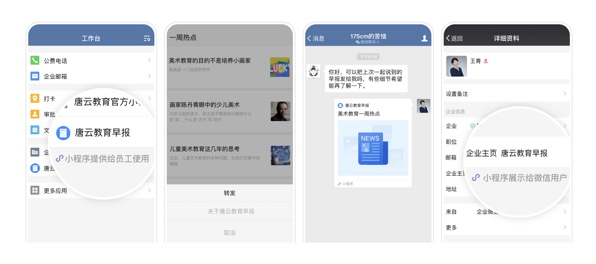
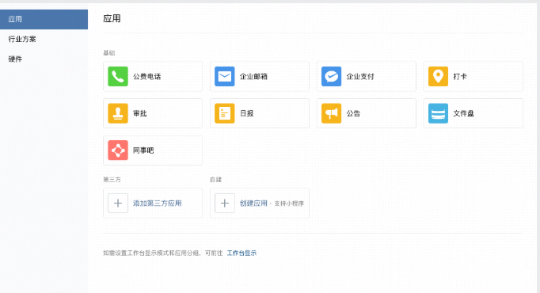
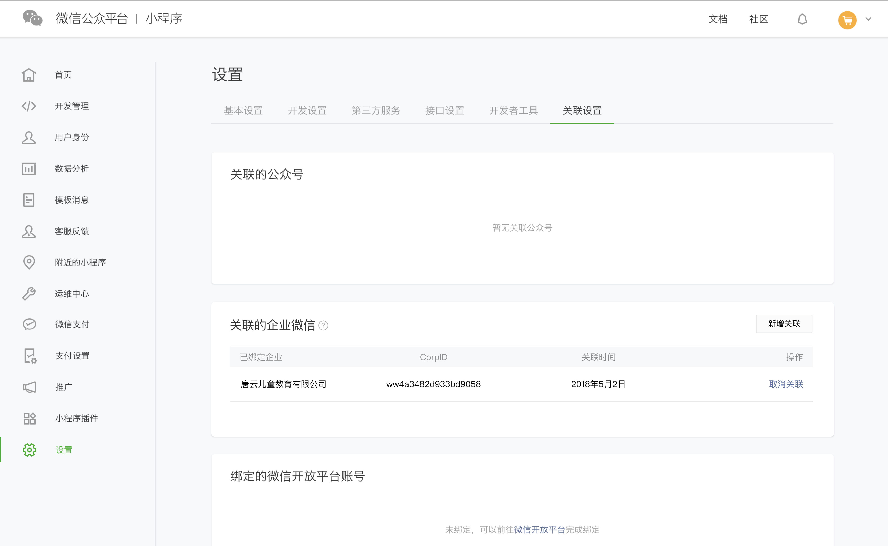
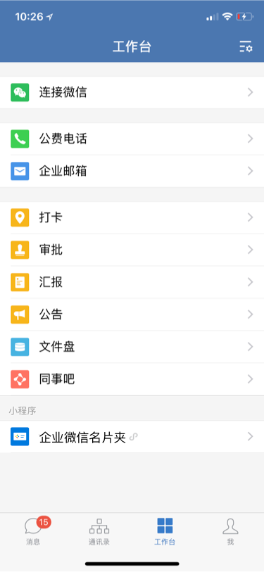

小程序关联到企业微信
最后更新：2022/03/28
目前，开发者可将小程序关联到企业微信，关联后可设置在企业微信的工作台与个人对外信息展示小程序。

关联入口
可通过以下三个方式找到关联小程序到企业微信的入口：
1.可前往企业微信管理后台-进入应用-创建应用 关联小程序

2.可前往企业微信管理后台-进入应用-选择已有应用-设置主页 关联小程序
3.登录小程序管理后台-设置-关联设置，找到关联到企业微信-前往关联的入口

关联步骤
1.找到上述三个关联入口进行关联
2.关联需要小程序开发者授权，故会跳转到公众平台中进行一次授权扫码，请使用要关联的小程序所属的管理员微信号进行扫码授权
3.对小程序进行可见范围的设置

4.关联完成，设置了可见范围的企业成员可以在工作台看到关联的小程序。

小程序被关联到了哪些企业，可以统一在小程序后台设置-关联设置-关联到企业微信中看到关联记录。